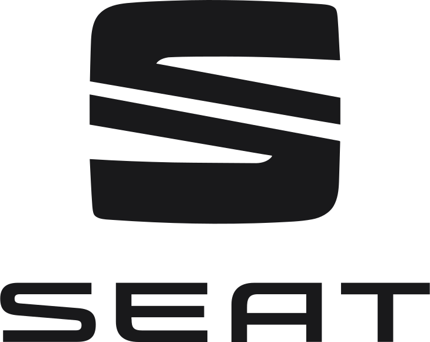
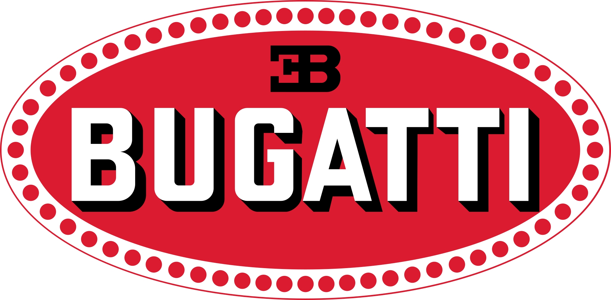
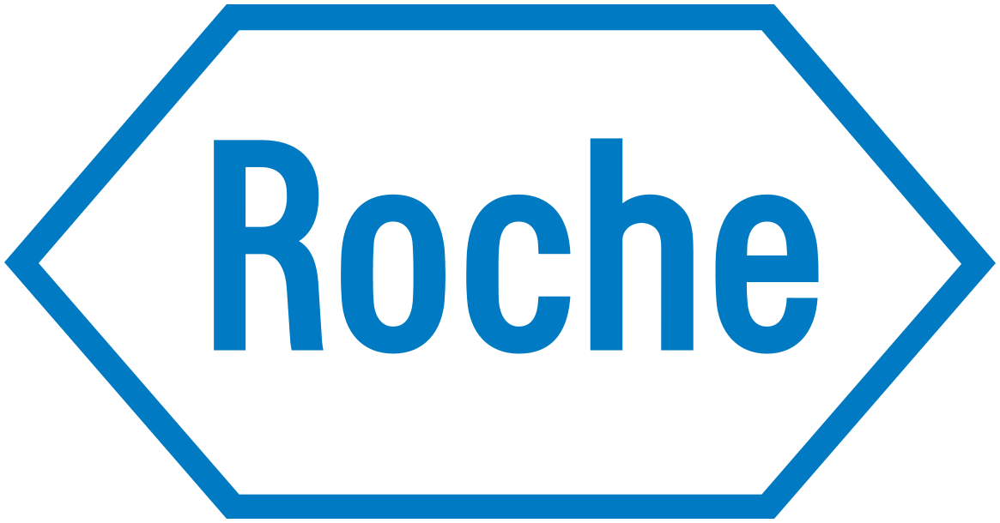

Prowadziłem duże migracje
Prowadziłem duże migracje danych do Salesforce oraz migracje z systemów legacy do nowoczesnych rozwiązań: od mapowania i czyszczenia danych, przez przełączenie, po walidację z biznesem.
Nazywam się Łukasz Waszkiewicz. Mogę dołączyć do projektu jako architekt, tech lead, developer, inżynier DevOps albo specjalista od migracji danych. Zaprojektuję system, zbuduję go, zautomatyzuję wdrożenia i sprawdzę organizację pod kątem jakości i bezpieczeństwa.







Projekty realizowane jako freelancer, bezpośrednio lub przez partnerów konsultingowych. Logotypy są znakami towarowymi ich właścicieli.
Prowadziłem duże migracje danych do Salesforce oraz migracje z systemów legacy do nowoczesnych rozwiązań: od mapowania i czyszczenia danych, przez przełączenie, po walidację z biznesem.
Przygotowywałem architekturę dużych, międzynarodowych systemów CRM zintegrowanych z systemami zewnętrznymi, w tym z systemami ERP takimi jak SAP przez MuleSoft.
Każda współpraca, w której brałem udział, zakończyła się pozytywnym feedbackiem od klienta i zespołu.
W ponad 20 projektach pełniłem każdą rolę w zespole wdrożeniowym Salesforce. Wejdę tam, gdzie Twój zespół ma teraz lukę, i zmienię rolę, gdy zmieni się etap projektu.
Mogę dostarczyć całą zmianę od początku do końca albo przejąć jeden obszar, na który Twój zespół nie ma czasu lub doświadczenia.
Architektura dużych systemów CRM zintegrowanych z systemami zewnętrznymi: projekt rozwiązania obejmujący kilka chmur, skalowalny model danych, współdzielenie i widoczność danych, tożsamość i dostęp, wzorce integracji — architektura, którą da się udokumentować i obronić na przeglądzie projektu.
Przegląd kodu, automatyzacji, modelu danych, współdzielenia, uprawnień, wyników Security Health Check i ryzyk związanych z limitami platformy. Wynikiem jest czytelny raport z priorytetami i szacunkiem pracy.
Strategia gałęzi w Git, pipeline'y z Salesforce CLI i wdrożeniami przyrostowymi, automatyczna walidacja, testy i statyczna analiza kodu — przewidywalne i powtarzalne wydania.
Prowadzę duże migracje z baz legacy, innych systemów CRM i innych organizacji Salesforce. Obejmują ETL, czyszczenie danych, mapowanie pól i wartości, duże wolumeny danych i walidację z biznesem przed uruchomieniem.
Refaktoryzacja starego kodu Apex do wzorców enterprise, przeniesienie Workflow Rules i Process Buildera do Flow, Visualforce i Aura do LWC oraz migracja starych systemów do Salesforce.
Apex, LWC, Flow, integracje REST i SOAP, Platform Events, portale Experience Cloud i Agentforce — odporne na duże wolumeny, przetestowane i gotowe na produkcję.
Korzystam z AI tam, gdzie przyspiesza i poprawia pracę, a platformę znam na tyle dobrze, że poradzę sobie bez niego.
Prowadzę też szkolenia i warsztaty z Salesforce. Są praktyczne, w miarę możliwości oparte na Waszej organizacji i Waszym kodzie, i prowadzi je ktoś, kto używa tego wszystkiego na produkcji.
Występowałem na konferencjach społeczności Salesforce oraz prowadziłem liczne wewnętrzne warsztaty i prezentacje dla zespołów, z którymi pracowałem.
Doświadczenie wdrożeniowe w:
Międzynarodowe programy enterprise w branżach:
Pracuję wyłącznie zdalnie, dla klientów z całej Europy, w modelu B2B, po polsku lub po angielsku.
Rozmawiamy o projekcie, o luce w zespole i o roli, którą trzeba obsadzić.
Dostaję dostęp do organizacji, repozytorium i narzędzi i pracuję według Waszego procesu i standardów.
Działam jako część zespołu, razem z product ownerami, analitykami, administratorami, QA i architektami.
Dokumentacja, decyzje i wiedza zostają w zespole, gdy kończę swoją część.
Siedem certyfikatów architektonicznych oraz certyfikaty developerskie, administracyjne, konsultanckie i z zakresu AI. Rangi Trailhead: Agentforce Legend, All Star Ranger.
ReleaseGuard to moja natywna aplikacja Salesforce. Sprawdza, co w organizacji może przestać działać przez kolejne wydanie, wycofanie lub wymuszenie po stronie Salesforce, i pokazuje, jak to naprawić przed terminem. Wkrótce w AppExchange (strona produktu jest po angielsku).
Umów krótką rozmowę w dogodnym terminie albo napisz kilka zdań o projekcie, o roli i o tym, od kiedy potrzebujesz wsparcia. Na e-maile odpowiadam w ciągu dwóch dni roboczych.